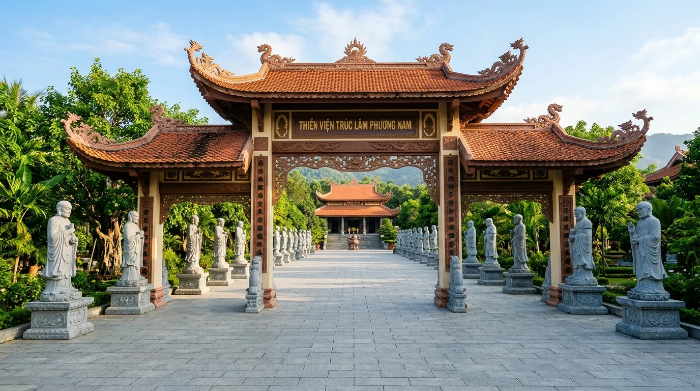

🧭 1. Tổng Quan Trúc Lâm Phương Nam & Chùa Ông
Tọa lạc trên khuôn viên rộng hơn 38.000 m² tại phường An Bình, TP. Cần Thơ (xã Mỹ Khánh, huyện Phong Điền cũ) và khánh thành vào tháng 5/2014, Thiền Viện Trúc Lâm Phương Nam tái hiện trọn vẹn phong cách kiến trúc truyền thống Việt Nam thời Lý – Trần với mái ngói mũi hài đỏ thắm, đầu đao cong vút chạm lưỡng long chầu pháp luân, sân gạch tàu mát rượi hàng tượng đá 18 vị Tổ sư, Đại Hùng Bảo Điện 44 cột gỗ lim nguyên khối và Tổ điện phụng thờ Tam Tổ Trúc Lâm (Phật hoàng Trần Nhân Tông, Pháp Loa, Huyền Quang).
Trở về trung tâm Bến Ninh Kiều lộng gió sông Hậu, Chùa Ông được xây dựng từ năm 1894 đến 1896 bởi cộng đồng người Hoa gốc Quảng Châu – Triều Châu và được công nhận Di tích kiến trúc nghệ thuật cấp Quốc gia năm 1993. Dưới giếng trời cổ kính rợp hàng trăm vòng nhang khoanh tỏa trầm thơm ngát, ngôi cổ miếu tôn vinh đạo nghĩa trung tín và sự gắn bó keo sơn Việt – Hoa trên đất phương Nam.
📜 2. Nghi Thức Thắp Hương & Văn Khấn Tây Đô
Không gian Thiền viện đề cao sự tĩnh lặng tuyệt đối của chốn tu thiền, trong khi cổ miếu Chùa Ông là di tích gỗ chạm khắc thế kỷ XIX cần bảo tồn nghiêm ngặt; quý khách lưu ý 3 nguyên tắc sau:
🏮 3 Quy Chuẩn Cốt Lõi Khi Chiêm Bái Tại Cần Thơ
🕯️ Bảo Vệ Kiến Trúc Gỗ Lim & Cổ Miếu 1894
Tại Thiền viện Trúc Lâm Phương Nam, chỉ dâng hương ở lư đồng ngoài sân trước Đại Hùng Bảo Điện, không mang hương vào sát 44 cột gỗ lim. Tại Chùa Ông, thực hiện đúng hướng dẫn hạn chế khói nhang bảo vệ di tích gỗ 130 năm.
🗣️ Chỉ Ngữ Giữ Tĩnh Lặng Nơi Thiền Đường
Thiền viện là nơi chư Tăng Ni tu tập thiền định hàng ngày; bước đi êm nhẹ, không nói cười lớn tiếng tại khu nội viện, nhà Tổ và giữ điện thoại ở chế độ im lặng khi vào bái Phật.
🪷 Tâm Thế Cư Trần Lạc Đạo — Không Mê Tín
Noi theo tinh thần Thiền phái Trúc Lâm nhập thế: hướng về sự tỉnh thức, hiếu nghĩa, giữ chữ tín trong giao thương và đời sống; không xóc quẻ bói toán mê tín hay thả tiền lẻ xuống hồ sen Chùa Một Cột.
⛩️ 3. Lộ Trình 6 Trạm Hành Lễ & Chánh Niệm
Lộ trình chuẩn mực đi qua 5 hạng mục kiến trúc cốt lõi từ ngoài vào trong của Thiền Viện Trúc Lâm Phương Nam tại Mỹ Khánh, sau đó kết nối về Trạm 6 Chùa Ông bên bờ Bến Ninh Kiều:
Hành Trình Thiền Hành Trúc Lâm Phương Nam & Cổ Miếu Tây Đô
Đồng hành cùng hành giả bước qua cổng Tam Quan mái ngói cổ truyền, đảnh lễ Đức Thế Tôn giữa rừng cột gỗ lim, tri ân Tam Tổ Trúc Lâm rồi xuôi về Bến Ninh Kiều chiêm ngưỡng cổ miếu 1894 dưới làn khói trầm nhang vòng huyền ảo.

Cổng Tam Quan Thiền Viện Trúc Lâm Phương Nam vươn cao bề thế với kết cấu bê tông giả gỗ, lợp ngói mũi hài đỏ tươi và bốn đầu đao uốn cong mềm mại chạm lưỡng long chầu pháp luân. Bước qua cây cầu lát gạch tàu dẫn vào đại sân thoáng rộng, hành giả đi giữa hai hàng 18 pho tượng Thập Bát La Hán tạc bằng đá hoa cương nguyên khối đứng trang nghiêm dưới tán cây sala và tùng bách xanh rợp, nhắc nhở dòng chảy truyền đăng bất tận từ Ấn Độ sang phương Đông và hội tụ tại đất Việt.
🚪 Nghi Thức Hành Lễ & Lối Đi
- Đi vào từ cổng bên phải (Giả quan) và khi ra về đi lối cổng bên trái (Không quan), nhường lối chính giữa (Trung quan) để giữ nét tôn kính truyền thống.
- Dọc theo đại sân gạch tàu, bước đi khoan thai dọc hai hàng tượng 18 vị A La Hán đá hoa cương dưới bóng cây sa la và bồ đề xanh mát.
- Không tựa người, không đặt mũ nón hay túi xách lên bệ đá của các pho tượng Tổ sư.
🙏 Giá Trị Lịch Sử & Tâm Linh
- Ba lối cổng Tam Quan biểu trưng cho 'Tam giải thoát môn' hoặc ba quán chiếu Không – Giả – Trung giúp phá trừ chấp trước.
- Mười tám vị A La Hán (Thập Bát La Hán) tạc bằng đá hoa cương tinh xảo biểu trưng cho định lực, trí tuệ giải thoát và hạnh nguyện hộ trì chánh pháp.
- Sắc đỏ gạch tàu và mái ngói mũi hài mang âm hưởng kiến trúc Đại Việt thời Lý – Trần ấm áp giữa vùng đất phương Nam.
CHỨNG NHẬN CHIÊM BÁI TÂM LINH CẦN THƠ TRỌN VẸN
Chúc mừng bạn đã hoàn thành trọn vẹn lộ trình 6 trạm kết nối Thiền Viện Trúc Lâm Phương Nam và Chùa Ông Bến Ninh Kiều. Nguyện cầu ánh sáng thiền định Trúc Lâm và đạo nghĩa đất Tây Đô đem lại sự an tịnh, hanh thông và phúc lành cho gia đình bạn.
🧭 4. Lịch Trình Chiêm Bái 1 Ngày Tối Ưu
Gợi ý lịch trình 1 ngày thư thái kết hợp không gian thiền định miệt vườn Phong Điền buổi sáng và di sản phố cổ Bến Ninh Kiều buổi chiều:
Buổi Sáng (07h00 - 11h15): Thiền Hành 5 Trạm Tại Thiền Viện Trúc Lâm Phương Nam
- 07h00: Di chuyển từ trung tâm Cần Thơ theo đường Nguyễn Văn Cừ nối dài khoảng 15km về phường An Bình (Mỹ Khánh, Phong Điền cũ), bước qua Trạm 1 Cổng Tam Quan & Sân 18 Vị La Hán.
- 08h00: Chiêm ngưỡng Trạm 2 Lầu Chuông (Đại Hồng Chung 1,5 tấn) & Lầu Trống mang dáng dấp kiến trúc thời Lý.
- 08h45: Vào lễ Phật trang nghiêm tại Trạm 3 Đại Hùng Bảo Điện 44 cột gỗ lim và sang Trạm 4 Tổ Điện thờ Tam Tổ Trúc Lâm phía sau.
- 10h00: Vãn cảnh Trạm 5 Chùa Một Cột thủy tạ & Bảo Tháp 9 tầng, ghé thăm phòng thuốc từ thiện Phòng khám Đông y Nam dược từ thiện (Tuệ Tĩnh Đường).
Buổi Trưa (11h30 - 13h30): Cơm Chay Miệt Vườn Phong Điền & Trái Cây Sông Nước
Dùng cơm chay thanh đạm quanh khuôn viên Mỹ Khánh với các món dân dã miền Tây: bánh xèo chay củ hủ dừa giòn rụm, lẩu nấm bông súng bông điên điển chay, đậu hũ non hấp lá sen và tráng miệng vú sữa, dâu Hạ Châu miệt vườn Phong Điền.
Buổi Chiều (14h30 - 17h30): Chiêm Bái Chùa Ông 1894 & Dạo Bộ Bến Ninh Kiều
- 14h30: Quay về trung tâm thành phố trên đường Hai Bà Trưng đối diện dòng sông Hậu, bước vào Trạm 6 Chùa Ông Bến Ninh Kiều (Quảng Triệu Hội Quán 1894).
- 15h15: Chiêm ngưỡng nghệ thuật tượng gốm giao chỉ trên mái ngói âm dương, dâng hương dưới những vòng nhang khoanh tỏa khói nắng chiều huyền ảo.
- 16h30: Tản bộ đón gió mát lành dọc công viên Bến Ninh Kiều và cầu đi bộ hoa sen, khép lại ngày hành hương Tây Đô trọn vẹn.